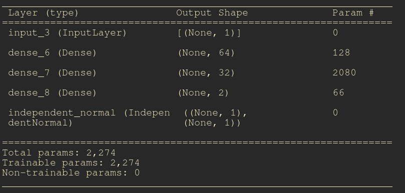
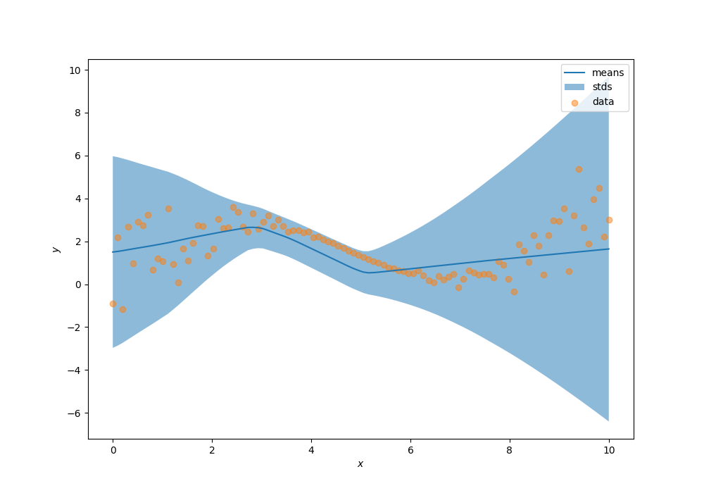

LAB 2. Distribution layers
Contents
# init repo notebook
!git clone https://github.com/rramosp/ppdl.git > /dev/null 2> /dev/null
!mv -n ppdl/content/init.py ppdl/content/local . 2> /dev/null
!pip install -r ppdl/content/requirements.txt > /dev/null
LAB 2. Distribution layers¶
In this laboratory, We’ll understand how the tensorflow_probability.layers module works.
import inspect
from rlxmoocapi import submit, session
import numpy as np
import matplotlib.pyplot as plt
import seaborn as sns
import tensorflow as tf
import tensorflow_probability as tfp
from scipy import stats
from tensorflow.keras.layers import Dense, Input
from tensorflow.keras.optimizers import SGD
from tensorflow.keras.models import Model
tfd = tfp.distributions
tfpl = tfp.layers
course_id = "ppdl.v1"
endpoint = "https://m5knaekxo6.execute-api.us-west-2.amazonaws.com/dev-v0001/rlxmooc"
lab = "L02.03.02"
session.LoginSequence(
endpoint=endpoint,
course_id=course_id,
lab_id=lab,
varname="student"
);
For this laboratory, We’ll learn the distribution parameters for each point in the following dataset:
x = np.linspace(0, 10, 100)
y = (
.3 * x +
2 * np.sin(x / 1.5) +
np.random.normal(
loc=.2,
scale=.02 * ((x - 5) * 2) ** 2,
size=(100, )
)
)
fig, ax = plt.subplots(1, 1, figsize=(10, 7))
ax.scatter(x, y)
ax.set_xlabel("$x$")
ax.set_ylabel("$y$")
Task 1¶
In this task you must a feedforward neural network using using tensorflow.keras.models.Model. This model must output an independent normal distribution.
NOTE: the dense layer that represents the distribution parameters must have a linear activation.
def make_model(hidden_units, activation, input_shape):
# YOUR CODE HERE
return Model()
The summary of your model must be equivalent to this one:

model = make_model(
hidden_units=[64, 32],
activation="relu",
input_shape=1,
event_shape=1
)
model.summary()
Test your code:
student.submit_task(namespace=globals(), task_id="T1");
model.summary()
We can visualize the density of the model (untrained):
dist = model(x.reshape(-1, 1))
means = dist.mean().numpy().flatten()
stds = dist.stddev().numpy().flatten()
fig, ax = plt.subplots(figsize=(7, 7))
ax.plot(x, means)
ax.fill_between(x, means - 3 * stds, means + 3 * stds, alpha=0.5)
Task 2¶
Implement the train_model function, which must compute the loss for a maximum likelihood estimation problem:
Where \(f_1(\cdot)\) and \(f_2(\cdot)\) are functions approximated through the feedforward neural network.
def train_model(model, x, y, epochs, optimizer):
## YOUR CODE HERE
for epoch in range(epochs):
with tf.GradientTape() as t:
loss = ...
grads = t.gradient(..., ...)
optimizer.apply_gradients(zip(..., ...))
print(f"epoch: {epoch}, loss: {float(loss.numpy())}")
train_model(model, x, y, 2000, SGD(learning_rate=0.01))
student.submit_task(namespace=globals(), task_id="T2");
Now, let’s visualize the learned distributions, your predictions must look similar to the following result:

dist = model(x.reshape(-1, 1))
means = dist.mean().numpy().flatten()
stds = dist.stddev().numpy().flatten()
fig, ax = plt.subplots(1, 1, figsize=(10, 7))
ax.plot(x, means, label="means")
ax.fill_between(x, means - 3 * stds, means + 3 * stds, alpha=0.5, label="stds")
ax.scatter(x, y, alpha=0.5, label="data")
ax.legend()
ax.set_xlabel("$x$")
ax.set_ylabel("$y$")
Task 3¶
Implement the log_prob function without tensorflow_probability or tensorflow. You can use numpy and scipy.stats. This function receives as arguments the data (x, y), and the neural network parameters weights.
NOTE 1: you must transform the
rstd(\(\hat{\sigma}\)) into valid standard deviations, with a softplus transformation:
NOTE 2: your function must support models with different layers sizes, you can test your function creating models with different number of layers and units.
weights = [layer.get_weights() for layer in model.layers[1:-1]]
print(len(weights))
# parameters for layer 1
w, b = weights[0]
print(w)
print(b)
pdf1 = pdf(x, y, weights)
pdf1[:10]
dist = model(x.reshape(-1, 1))
pdf2 = np.exp(dist.log_prob(y.reshape(-1, 1)))
pdf2[:10]
You can visualize that both log probs are the same:
data1 = np.array(sorted(zip(y, pdf1), key=lambda x: x[0])).T
data2 = np.array(sorted(zip(y, pdf2), key=lambda x: x[0])).T
fig, ax = plt.subplots(1, 2, figsize=(10, 7))
ax[0].plot(data1[0], data1[1])
ax[0].fill_between(
data1[0], np.zeros((100, )), data1[1], alpha=0.4
)
ax[0].set_title("Your solution")
ax[1].plot(data2[0], data2[1])
ax[1].fill_between(
data2[0], np.zeros((100, )), data2[1], alpha=0.4
)
ax[1].set_title("Tensorflow probability")
student.submit_task(namespace=globals(), task_id="T3");
Task 4¶
Compute the gradients for the probabilistic layer in the model without tensorflow. You can use numpy and scipy.
Consider the loss function:
NOTE: you must transform the
rstd(\(\hat{\sigma}\)) into valid standard deviations, with a softplus transformation:
def compute_gradients(mu, rstd, X):
# YOUR CODE HERE
...
mu = np.random.normal(loc=1, scale=1, size=(10, 1))
rstd = np.random.normal(loc=1, scale=1, size=(10, 1))
parameters = np.concatenate([mu, rstd], axis=1).astype("float32")
X = np.random.normal(loc=0, scale=1, size=(10, 1)).astype("float32")
raw_grads = compute_gradients(mu, rstd, X)
print(raw_grads)
# Let's see the `tensorflow` solution
input_layer = Input(shape=(2, ))
output = tfpl.IndependentNormal(event_shape=1)(input_layer)
model = Model(input_layer, output)
model.summary()
Your function must return the following result:
params_tf = tf.constant(parameters)
X_tf = tf.constant(X)
with tf.GradientTape() as t:
t.watch(params_tf)
dist = model(params_tf)
output = - dist.log_prob(X_tf)
grads = t.gradient(output, params_tf)[:, :1]
print(grads.numpy())
student.submit_task(namespace=globals(), task_id="T4");